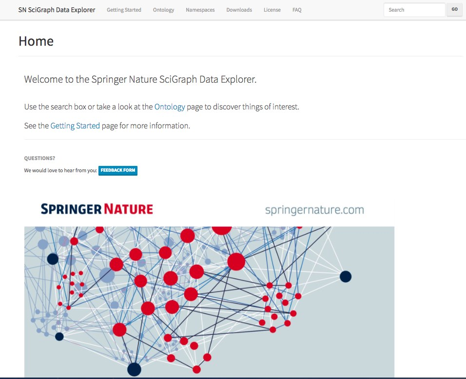

Projects / all / research-analytics / semantic-web / website
Springer Nature SciGraph
A Linked Open Data platform aggregating data sources from Springer Nature and key partners from the scholarly domain.
- Years
- 2016–2019
- Status
- Completed
- Role
- Lead Data Architect, Technical Product Owner

Springer Nature SciGraph is a Linked Open Data platform aggregating data sources from Springer Nature and key partners from the scholarly domain.
SN SciGraph collates information from across the research landscape, such as funders, research projects, conferences, affiliations, publications, citations, patents, clinical trials and makes it available as structured metadata that can be downloaded and reused in other applications.
For more information, see the SciGraph homepage.
SciGraph Open Data
The SciGraph dataset is available for anyone to download. Over the years, we released the JSON-LD metadata for millions of entities, mostly under a CC BY 4.0 license. This metadata can be downloaded and reused within your own application.
For more information, see the SciGraph releases. On this site, you'll find various blog posts on this topic, eg:
- SN SciGraph is part of the Linked Open Data Cloud 2018
- Exploring SciGraph data using JSON-LD, Elastic Search and Kibana
SciGraph Core Ontology
The SciGraph Core Ontology is the OWL model we developed in order to describe key concepts of interest to content publishing at Springer Nature.
The ontology contains formal definitions of entities such as Authors, Articles, Books, Chapters, Conferences, etc.. as well as mappings to other well known knowledge models. See the following links to find out more:
See also:
- SciGraph on slideshare
Technology
- RDF, OWL and SKOS
- JSON-LD and schema.org
- JSON-LD stored in a document database
- Google BigQuery SQL and Python for generating later releases
Screenshots 5
Writing about it 5
- SciGraph 2017-2023
- Interlinking SciGraph and DBpedia datasets using Link Discovery and Named Entity Recognition Techniques
- SN SciGraph: more related objects links increase discoverability of content
- PySciGraph: simple API for accessing SN SciGraph content
- SciGraph publishes 1 billion facts as Linked Open Data